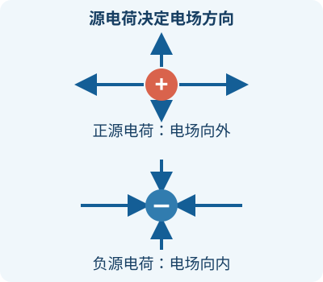

10.2 电场与电场强度
学习与练习：静电场与电容：分步典型题，附详细例题与练习。
一、电场：电荷如何影响周围空间
静止电荷在周围空间产生静电场。另一个电荷放到该处时受到静电力。电场是客观存在的物质形态，不依赖于是否放入试探电荷；场可能随位置不同而不同。
本讲义中粗体字母表示矢量；r₀ 表示从源电荷指向观察点的单位矢量，n 表示单位法线矢量。
二、电场强度
在某一点放入足够小的正试探电荷 q₀，测出它受到的力 F。试探电荷要足够小，是为了不显著改变原来产生电场的电荷分布。定义该点场强为：
E 为电场强度，是有大小和方向的矢量；单位 N/C，等价于 V/m。场强方向定义为正试探电荷在该点受力的方向。对任意电荷 q，静电力 F = qE：正电荷受力沿场强方向，负电荷受力反向。场强由源电荷决定，不由试探电荷的正负决定。
某点场强为 200 N/C，水平向右。将 −3 μC 的小电荷放在该点，求所受电力。
已知均匀场方向向右，所求是电荷受力。使用 F = qE；大小 |F|=3×10⁻⁶×200=6×10⁻⁴ N。电荷为负，方向与场强相反。
答案：6×10⁻⁴ N，水平向左。
检查：N/C 乘 C 得 N，方向由负号决定。
三、点电荷与场强叠加
把真空中静止点电荷 Q 放在原点，观察点 P 距它 r。取 r₀ 从源电荷指向 P，由库仑定律除以正试探电荷，得到：
r 的单位为 m；ε₀≈8.85×10⁻¹² C²/(N·m²)。Q 为正时场沿 r₀ 向外；Q 为负时相反，指向电荷。该公式只适用于 r>0 的点电荷模型，不能把 r=0 代入。
多个源电荷同时存在时，各自的场强按矢量相加：E=ΣEᵢ。先确定每个场强方向，再选坐标、分解分量、相加。不要把方向不同的场强大小直接相加。
真空中两个相同的正点电荷对称放置，求连线中点的场强。
中点到两电荷的距离相同，每个电荷产生的场强大小相等。左侧正电荷在中点产生向右的场，右侧正电荷产生向左的场，矢量和为零。
答案：中点场强为零。
这只说明该点合场为零，不表示两个电荷各自不产生电场。
四、连续带电体：把小块的贡献加起来
电荷连续分布时，不能把整个带电体都当成位于同一点的电荷。将它分成许多小块 dq，每一小块近似为点电荷，求出它在观察点产生的 dE，再对整个带电体求矢量积分：
这里 r 和 r₀ 都从当前电荷元指向观察点，通常随电荷元的位置改变。线、面、体电荷密度分别为 λ=dq/dl（C/m）、σ=dq/dS（C/m²）、ρ=dq/dV（C/m³）；均匀时可分别写 dq=λdl、dq=σdS、dq=ρdV。积分是把无限多微小贡献按方向相加。
均匀带电细环的轴线上
设圆环半径 R、总电荷 Q，P 在轴线上距圆心 x。取一对对称电荷元：它们垂直于轴线的场强分量互相抵消，沿轴线的分量同向。各电荷元到 P 的距离均为 √(R²+x²)，轴向投影因子为 x/√(R²+x²)。因此沿正轴的分量
x 是带符号坐标，Q 可正可负，结果的正负表示沿轴的方向。x=0 时对称抵消，场强为零；当 |x| 远大于 R 时，场近似相当于总电荷集中在圆心的点电荷。P 不在轴线上时，上述对称抵消推理不能照搬。
均匀带电圆盘的轴线上
将半径 R、面密度 σ 的圆盘分为半径 s、宽 ds 的细环，电荷元 dq=σ·2πs ds。对于轴上 x>0 的点，把细环公式积分：
= σ/(2ε₀) [1 − x/√(x²+R²)]
第一步利用每个环的轴向场，第二步对 s 积分；这里明确取 x>0。σ>0 时方向沿正轴。圆盘两侧方向相反。R 远大于 x 时，近似得到无限大均匀带电平面的场强大小 |σ|/(2ε₀)；其两侧方向背离正电面。该结果是理想无限大平面的结果，有限平面边缘附近不能直接使用。
五、电偶极子：一对等量异号电荷
将 −q 和 +q 固定在相距 l 的两点，q 表示正的电荷量。电偶极矩 pₑ=ql，其中 l 从负电荷指向正电荷，大小 l，单位 C·m。教材讨论远处场时要求观察距离 r 远大于 l；这时可把这一电荷对称为电偶极子。先画出两个源电荷各自的场，再相加，不能以总电荷为零就断定场处处为零。
轴线和中垂线上的远场
以电荷中点为 O，轴线指向 +q。一点 P 在正电荷外侧、距 O 为 r（r>l/2）。正电荷在 P 产生向右的场，负电荷产生向左的场；按大小相减：
= 2kqlr/(r²−l²/4)² ≈ 2kpₑ/r³
末式要求 r≫l，方向沿偶极矩。中垂线上距 O 为 r 的点，两电荷到该点距离相同，垂直于轴线的分量抵消，轴向分量指向负电荷。精确大小及远处近似为：
中垂线的场方向与偶极矩相反。远场都按 1/r³ 衰减，而单个点电荷按 1/r² 衰减；远场近似不能直接用于 r 与 l 相近的位置。
偶极子在均匀外电场中
正负电荷各受大小 qE、方向相反的力，合力为零；两力作用点不同，一般形成使偶极矩转向电场的力矩。设偶极矩与场夹角 θ：
θ=0 时力矩为零且方向一致，为稳定平衡；θ=π 时力矩也为零，但受微小偏转后会偏离，是不稳定平衡。非均匀外场中，两端场强不同，合力未必为零。
偶极矩大小 2.0×10⁻⁸ C·m，放在 3.0×10⁴ N/C 的匀强场中，与场成 30°。求力矩大小。
匀强场中用 M=pₑE sinθ，代入 sin30°=1/2：M=2.0×10⁻⁸×3.0×10⁴×0.5。
答案：3.0×10⁻⁴ N·m；力矩使偶极矩转向电场方向。
单位 C·m 乘 N/C 得 N·m，合力虽为零但力矩不为零。
六、有限长带电直线的场
均匀细棒沿 x 轴从 −a 到 +a，线密度 λ，P 在其中垂线上距中点 d。对称电荷元的水平分量抵消，竖直分量相加。距离为 √(x²+d²)，竖直投影为 d/√(x²+d²)，所以
使用原函数 x/[d²√(x²+d²)]，将上下限代入即得结果。λ>0 时 P 处沿远离细棒方向；λ<0 时相反。a→∞ 得 E=2kλ/d=λ/(2πε₀d)（这里为带符号分量）。当 d≫a 时，细棒近似总电荷 Q=2aλ 的点电荷。
两平行无限大平面分别带均匀面密度 +σ 和 −σ（σ>0）。求两板间和板外的场。
每张平面的场强大小都是 σ/(2ε₀)。板间两场均由正板指向负板，因此相加；两侧板外的两个场反向且等大，因此抵消。
答案：板间场强为 σ/ε₀，方向由正板指向负板；板外场强为零。
这是无限平面模型；有限板在边缘附近不能忽略边缘效应。
详细讲解与练习
为什么要引入电场？
一个带电体可以对附近另一个电荷施力。为了描述源电荷在周围空间造成的影响，我们引入电场：先描述空间某处的电场，再判断放在那里的电荷受到什么力。电场强度通常简称场强，记作 E，是有大小也有方向的矢量。
场源是产生所研究电场的电荷；试探电荷是用来考察该处电场的小电荷。两者不是两种不同的电荷，而是问题中的不同角色。试探电荷应足够小，以至它对原有场源电荷分布的影响可以忽略。
场强 E 和受力 F
某点的场强定义为：把足够小的正试探电荷 q₀ 放在那里，它受到的电场力 F 除以 q₀，并在试探电荷趋于足够小的理想极限下得到 E=F/q₀。反过来，若已知场强，电荷 q 受力为 F=qE；这里 F、E 是矢量，q 带正负号。
- 正电荷受力方向与 E 相同。
- 负电荷受力方向与 E 相反。
- 场强由场源与位置决定；在试探电荷不显著改变原电场的条件下，更换试探电荷不会改变原场强。
场强单位 N/C，也等价于 V/m。别把“负电荷受力向左”直接当作“场强向左”：负电荷受力方向与场强相反。
例 1：某点场强大小为 200 N/C，方向向右；在该点放一个 −3 μC 的小电荷。求它受到的电场力。
先换单位：−3 μC=−3×10⁻⁶ C。力的大小 |q|E=3×10⁻⁶×200=6×10⁻⁴ N。因为 q 为负，方向与场强相反，即向左。题设假定试探电荷足够小，不显著改变原场。

点电荷产生的场
真空中，静止点电荷 Q 在距离它 r 的位置产生的场强大小为 E=k|Q|/r²，其中 k≈9.0×10⁹ N·m²/C²。正源电荷的场从它向外；负源电荷的场指向它。这里的正负是源电荷的符号，而不是后来放进去的试探电荷的符号。
这个公式只适用于点电荷模型（或在满足相应条件时可以等效为点电荷的情况）。r 是从源电荷到所求场点的距离；r=0 处不能直接使用这个理想点电荷公式。
例 2：真空中 Q=+2 μC，求距它 0.30 m 处的场强。
E=9.0×10⁹×2×10⁻⁶/(0.30)²=2.0×10⁵ N/C。方向沿源电荷指向该场点的连线，远离正电荷。若场点在 Q 的右侧，方向就是向右；若在左侧，则向左。
多电荷如何叠加？
多个源电荷产生的合场强是各自场强的矢量和：先在同一场点分别画出各场方向，再按方向加减或分解为分量。不能无条件把大小直接相加。
例 3：两个相同的正点电荷固定在一条直线上，求连线中点的合场强。
中点到两个电荷距离相等，两个场强大小相等。左侧正电荷在中点产生向右的场，右侧正电荷在中点产生向左的场。它们大小相等、方向相反，合场为零。注意：这只说明该中点的合场为零，不说明整个空间电场为零。
如果其中一个改为同等大小的负电荷，那么中点的两个场都从正电荷指向负电荷，方向相同，大小相加。
从离散电荷到连续分布
带电细线、薄面或体积中的电荷可近似连续分布。计算时，把它想象成很多足够小的电荷元 dq：每个电荷元近似产生一个微小场 dE，再对整个分布作矢量积分。解题顺序是：选电荷元、写 dq、确定电荷元到场点的距离及方向、按对称性化简、逐分量积分。
常见写法：均匀线电荷 dq=λ dl；均匀面电荷 dq=σ dS；均匀体电荷 dq=ρ dV。若密度不均匀，λ、σ 或 ρ 要写成位置的函数，不能直接提出积分号。连续分布在某一点的场还要注意该点是否落在电荷分布上，以及所用理想模型的适用性。
练习与解答
1. 某点场强向上。放入一个负试探电荷后，它受力方向如何？换成等量正试探电荷，场强方向会反转吗？
解：负电荷受力向下；正电荷受力向上。试探电荷足够小时，换电荷不会使原有场强方向反转。
2. 真空中一个点电荷的电量不变，距离由 r 变成 3r，场强大小变成多少？
解：E 与 r² 成反比，因此变为原来的 1/9。方向仍按源电荷符号和场点位置判断。
3. 两个电场在某点分别为向东 3 N/C、向北 4 N/C，求合场大小。
解：两方向互相垂直，合场大小为 √(3²+4²)=5 N/C，方向向东北侧，偏东或偏北角度要按所选基准进一步计算。